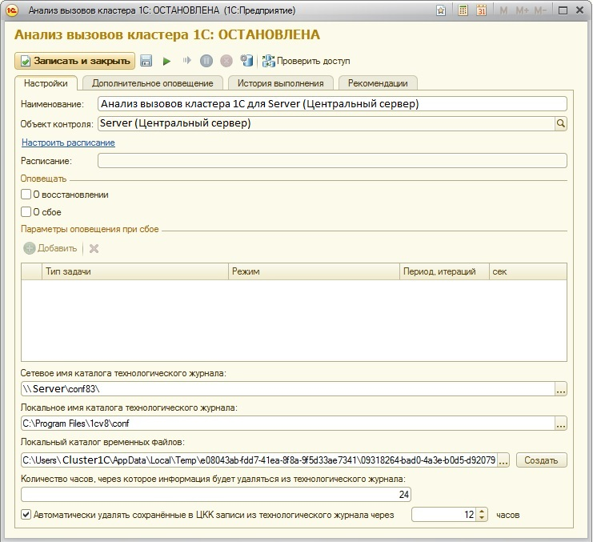
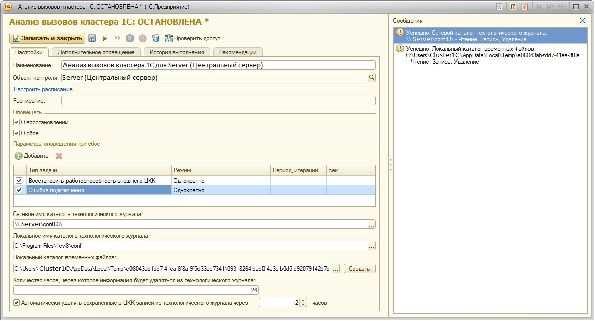

Анализ вызовов кластера 1С
Контрольная процедура позволяет вести автоматический контроль ошибочных ситуаций в работе "1С:Предприятие", оповещать ответственных лиц о сбоях в работе контрольной процедуры и о восстановлении работоспособности.
Контроль ошибочных ситуаций выполняется посредством автоматических настройки технологического журнала и его разбора. При корректной настройке параметров рабочего сервера, большинство настроек контрольной процедуры заполняются автоматически рекомендуемыми значениями.

Рекомендуемый порядок настройки контрольной процедуры
1. Настроить расписание, рекомендуемое значение: каждый день; каждые 600 сек.
2. Настроить режим оповещения о восстановлении.
3. Настроить режим оповещения о сбое и добавить задачи, при сбое которых будет производиться оповещение.
4. Оставить без изменения сетевое имя каталога технологического журнала (должны были корректно указать при настройке рабочего сервера).
5. Оставить без изменения локальное имя каталога технологического журнала на рабочем сервере (должны были корректно указать при настройке рабочего сервера).
6. Оставить без изменения локальный каталог временных файлов (автоматически создается во временном каталоге пользователя на сервере, под которым работает сервер 1С:Предприятие). При желании можно указать любой другой локальный каталог. Необходим доступ на чтение, запись, удаление.
7. Оставить без изменения через сколько часов информация будет удаляться из технологического журнала. Указанное значение будет использоваться как атрибут history элемента log при настройке технологического журнала. Рекомендуемое значение - 24 часа.
8. Оставить без изменения как долго информация, собранная контрольной процедурой будет хранится в информационной базе ЦКК. К выбору этого параметра следует подходить очень осторожно: если выбрать слишком большое значение, размер информационной базы ЦКК через некоторое время и некоторое количество разобранных технологических журналов станет неприлично велик. Рекомендуется для контрольной процедуры "Анализ вызовов кластера 1С" хранить собранные данные не более 12 часов.
После всех настроек рекумендуется проверить доступ к каталогам с помощью кнопки "Проверить доступ". При правильной настройке каталогов форма будет выглядеть следующим образом
